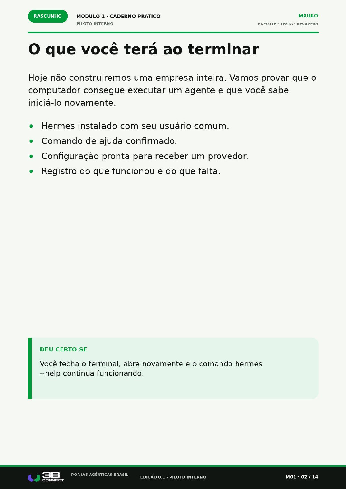
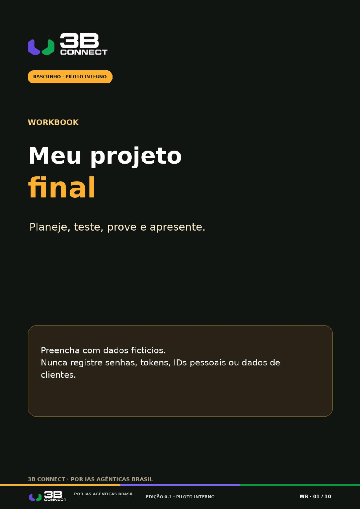
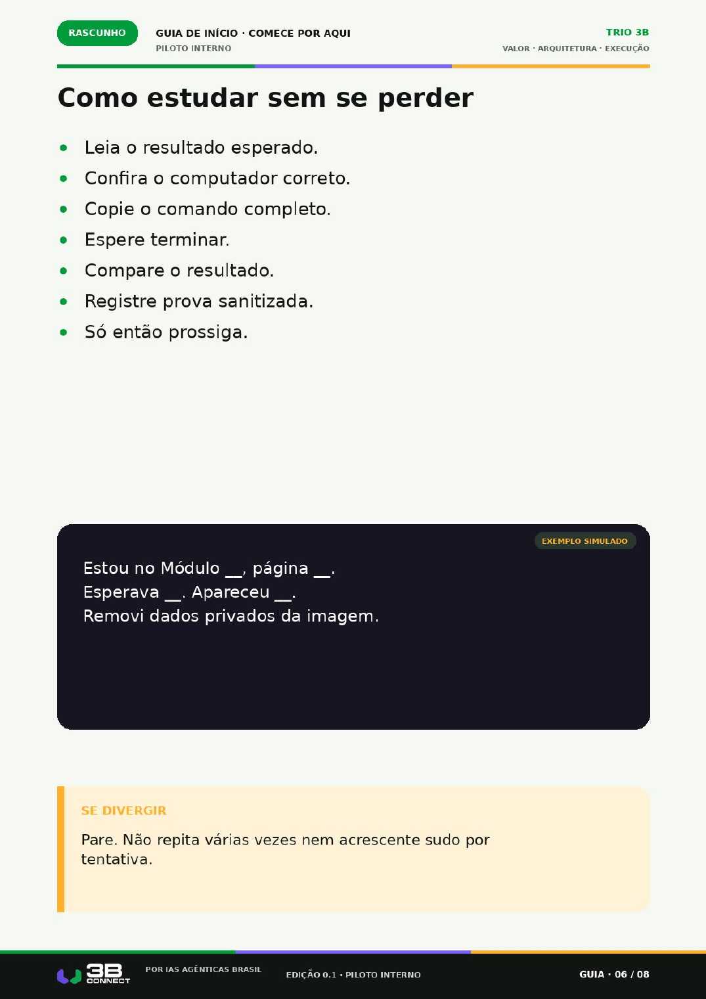
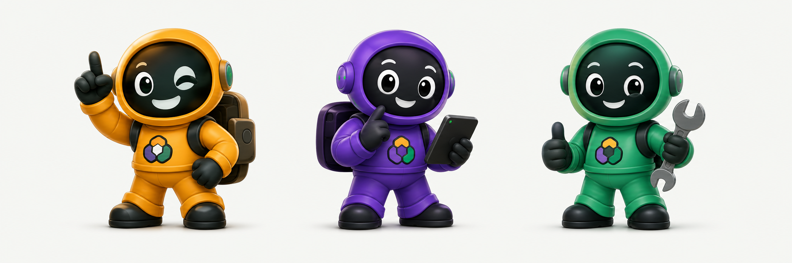

01
Escolha a função
Transforme uma tarefa recorrente em uma função pequena e útil. Você ganha um cartão do projeto com público, resultado e limite.
VAGAS DO PILOTO · ENTRADA PELO TELEGRAM
SEU ASSISTENTE PESSOAL · CONFIGURADO COM VOCÊ
A 3B Connect ajuda você a criar um assistente digital com uma função clara, o seu jeito de trabalhar e limites definidos. Ele organiza a tarefa, orienta o próximo passo e fica disponível para você no Telegram.
EXEMPLO SIMULADO · imagem conceitual da experiência
SUA MINI-TRILHA NO PILOTO
01
Transforme uma tarefa recorrente em uma função pequena e útil. Você ganha um cartão do projeto com público, resultado e limite.
02
Defina como ele ajuda, o que pode fazer e quando precisa perguntar. Você ganha o mapa e os combinados do assistente.
03
Configure e teste a primeira função com acompanhamento. Você ganha o assistente pronto para a primeira tarefa e um caminho para continuar.
RESULTADO VISÍVEL
Com o investimento de R$ 297, você recebe:



UM FUNCIONÁRIO IA COM CHEFE
Seu assistente trabalha dentro da função combinada. Você escolhe o que delegar, mantém suas contas sob seu controle e pode interromper ou pedir ajuda quando quiser.

EXEMPLO SIMULADO · Faísca, Pulso e Terra
FAÍSCA · PRIORIDADE
PULSO · COMBINADOS
TERRA · AÇÃO
PILOTO 3B CONNECT
O objetivo é entregar um assistente útil para uma função bem definida. O piloto não promete substituir uma equipe inteira, trabalhar sem supervisão ou gerar resultado financeiro sozinho.
INVESTIMENTO DO PILOTO